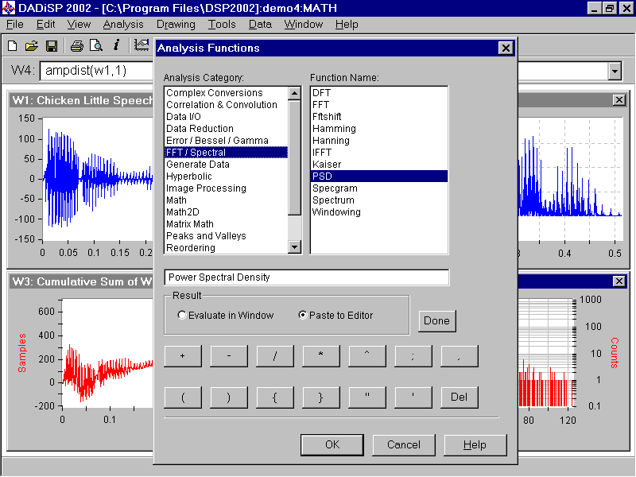
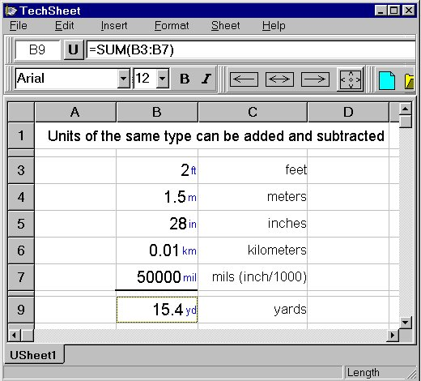

| analysis |
| home page |
|  | The online data analysis system uses the Survey Documentation and Analysis (SDA) program developed and maintained by the Computer-assisted Survey Methods Program at the University of California, Berkeley. . NACJD-Data Analysis System Data Analysis System NACJD Home . 2 NACJD Collections Available for Use with Data Analysis System Documentation for SDA from the Computer-assisted Survey Methods Program at the University of California, Berkeley Introduction to NACJD Online Data Analysis System A selection of NACJD data collections is available for online data analysis. This means that users can perform certain statistical procedures on the data, create custom subsets, or browse the codebook on the internet, without downloading the entire collection and importing the data into a statistical package. |
|  | For example, several users can connect to the server at the same time to view stock charts with the GUI client; or MAS can be set up to run market analysis periodically on all stocks in the database and to send buy and sell signals resulting from the analysis to all users who have subscribed to this service. . The Market Analysis System (MAS) is an open-source software application that provides tools for analysis of financial markets using technical analysis. MAS provides facilities for stock and futures charting, including price, volume, and a wide range of technical analysis indicators. MAS also allows automated processing of market data - applying technical analysis indicators with user-selected criteria to market data to automatically generate trading signals - and can be used as the main component of a sophisticated trading system. |
|